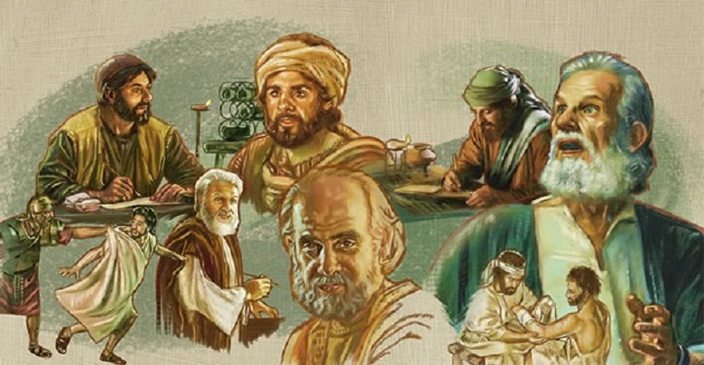

La Santa Biblia
La Biblia ofrece una perspectiva única y profunda sobre la condición humana y el significado de la vida. Muchas personas encuentran en la Biblia una guía para enfrentar los desafíos y las preguntas más importantes de la vida. Además, la lectura de la Biblia puede ser una fuente de inspiración y consuelo en momentos difíciles.
LIBROS Arte de la Biblia

Autores de la Biblia
El Antiguo Testamento fue escrito principalmente en hebreo, con algunas secciones en arameo, y contiene 39 libros que fueron escritos por varios autores, incluyendo Moisés, David, Isaías, Jeremías y Ezequiel, entre otros. El Nuevo Testamento, escrito en griego, contiene 27 libros que fueron escritos por los apóstoles y otros seguidores de Jesús, incluyendo a Mateo, Marcos, Lucas, Juan, Pablo, Pedro, Santiago y Judas.

¿Qué es la Biblia?
La Biblia es un libro sagrado que contiene la colección de escritos religiosos más importantes del judaísmo y del cristianismo. Es considerada por los cristianos como la palabra de Dios y es el texto fundamental de la religión cristiana. Está compuesta por dos partes principales: el Antiguo Testamento, que contiene 39 libros y fue escrito principalmente en hebreo y arameo, y el Nuevo Testamento, que contiene 27 libros y fue escrito en griego.

Lengua Original de la Biblia
La Biblia fue escrita originalmente en tres idiomas principales: hebreo, arameo y griego. El Antiguo Testamento, que consta de 39 libros, fue escrito principalmente en hebreo, con algunas partes en arameo, mientras que el Nuevo Testamento, con 27 libros, fue escrito en griego koiné, la forma común del idioma griego en la época en que fue escrito.
¿Por que es importante leer la Biblia?
Como guía espiritual: Para muchos creyentes, la Biblia es una guía para vivir una vida plena y satisfactoria. Contiene enseñanzas sobre cómo tratar a los demás, cómo enfrentar los desafíos de la vida y cómo encontrar el propósito y la paz interior.
Antiguo Testamento
El Antiguo Testamento es la primera parte de la Biblia cristiana y está compuesto por 39 libros que fueron escritos a lo largo de muchos siglos por diferentes autores. Estos libros se dividen en varias categorías: la ley, la historia, la poesía y la profecía.
Nuevo Testamento
El Nuevo Testamento es una fuente importante de enseñanzas religiosas y morales para los cristianos y también es considerado una obra literaria de gran valor. Los textos han sido estudiados y analizados por siglos, y han tenido una influencia significativa en la historia y la cultura occidental.
Los Salmos
El Antiguo Testamento es la primera parte de la Biblia cristiana y está compuesto por 39 libros que fueron escritos a lo largo de muchos siglos por diferentes autores. Estos libros se dividen en varias categorías: la ley, la historia, la poesía y la profecía.
Apocalipsis
El Antiguo Testamento es la primera parte de la Biblia cristiana y está compuesto por 39 libros que fueron escritos a lo largo de muchos siglos por diferentes autores. Estos libros se dividen en varias categorías: la ley, la historia, la poesía y la profecía.